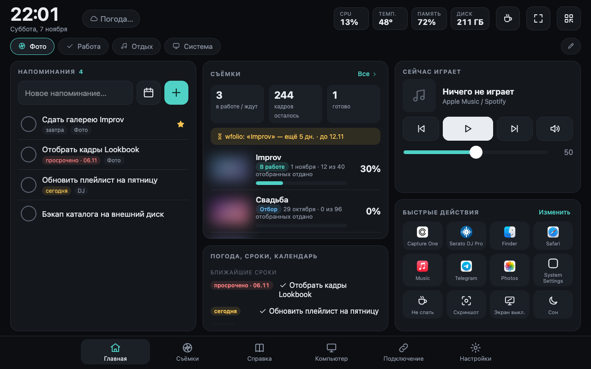
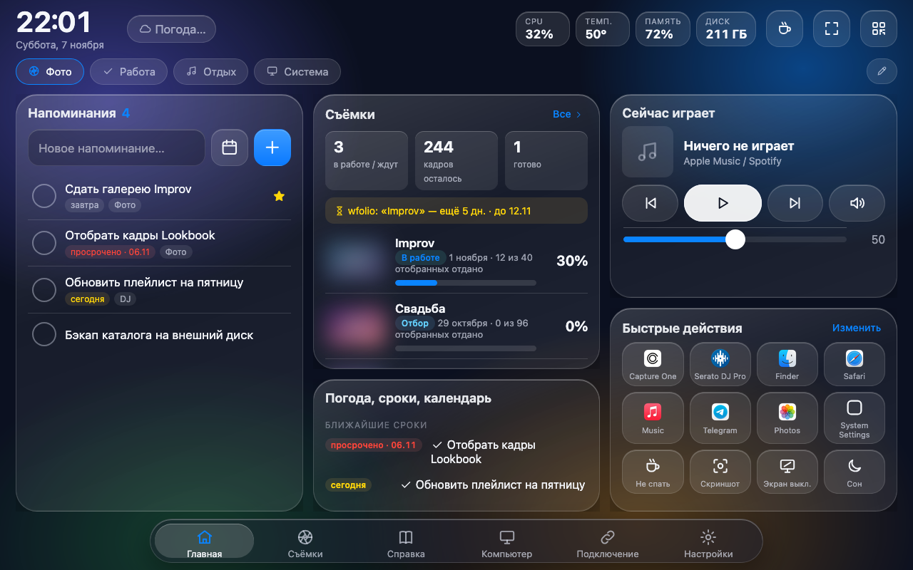
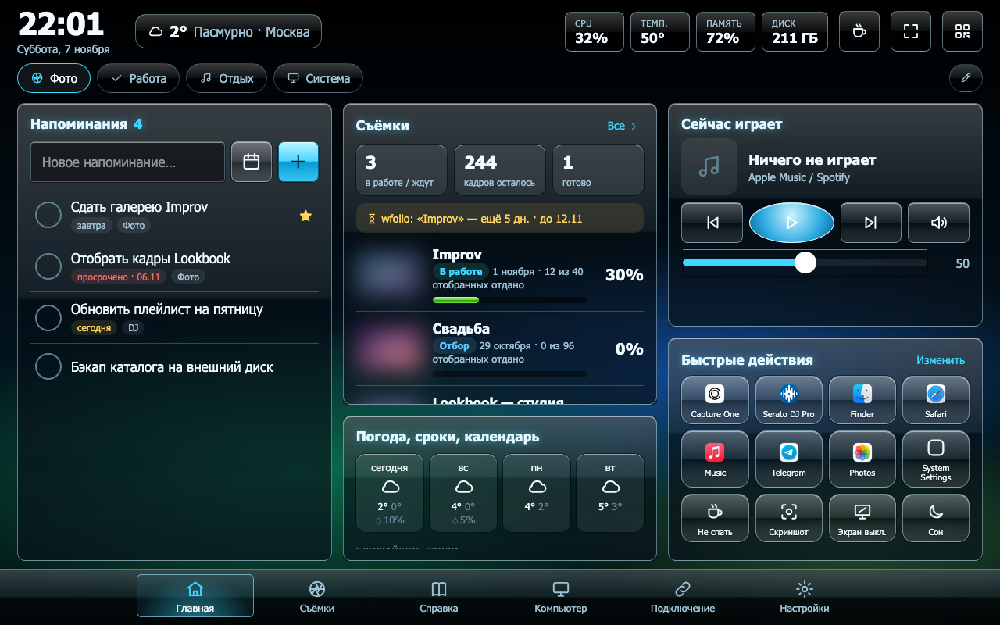
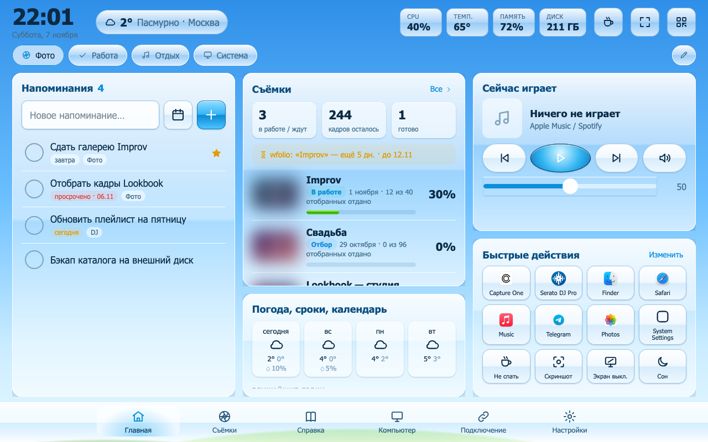
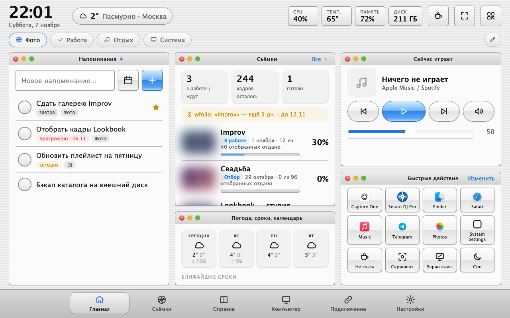
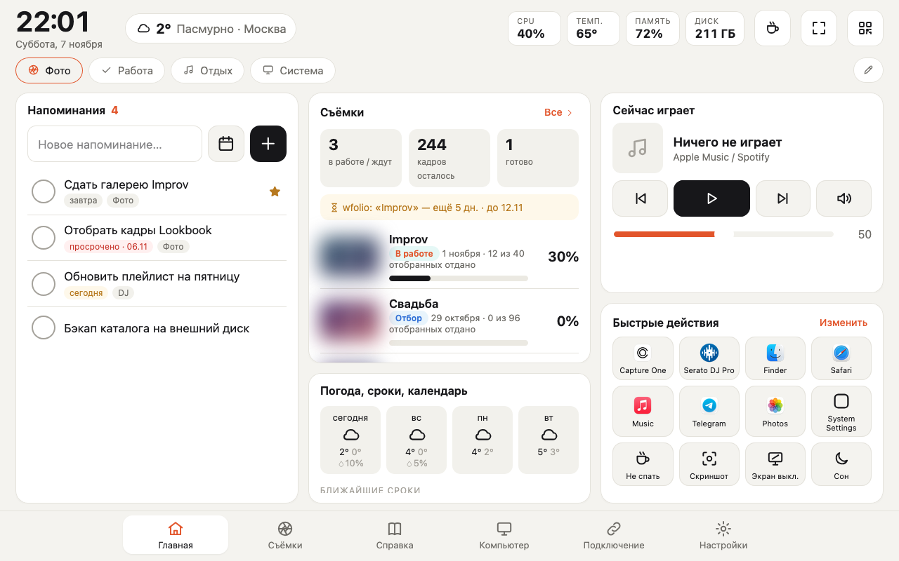
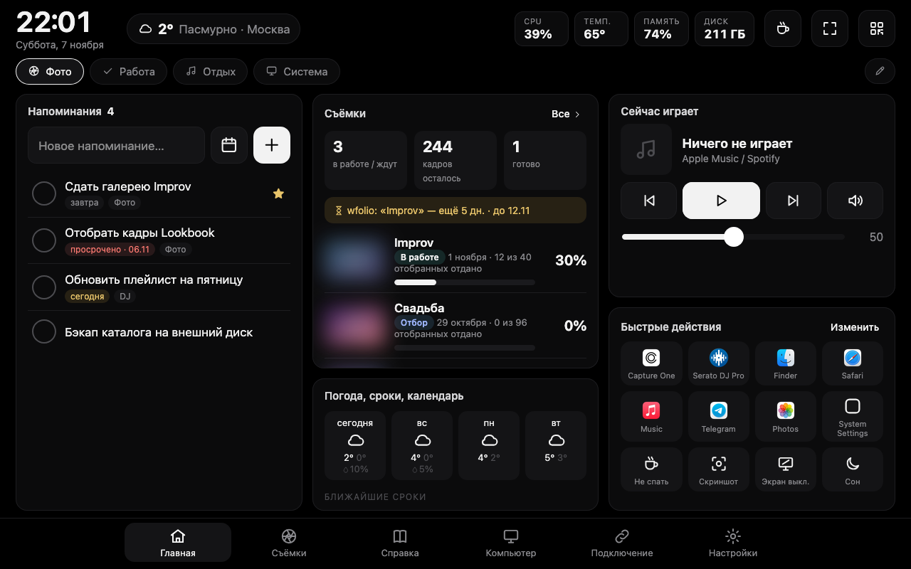

TabDock · скины Настройки → Оформление · Settings → Appearance

Классика — стандартная тема

Liquid Glass — стекло и мягкий свет

Aero · Vista — чёрное стекло, сияние

Aero · Seven — небо, трава, пузыри

Mac OS X — Aqua и полоски

Бумага — светлый минимализм

OLED — чёрный, монохром